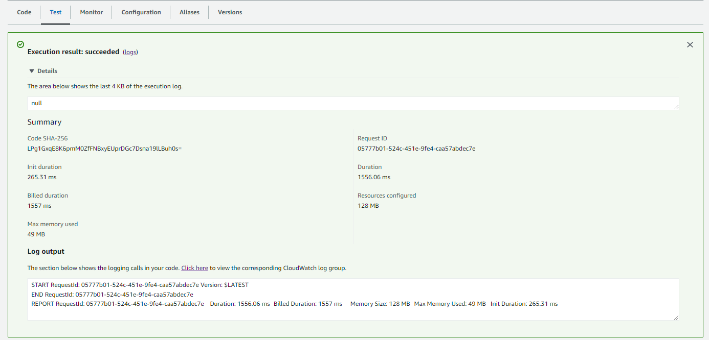
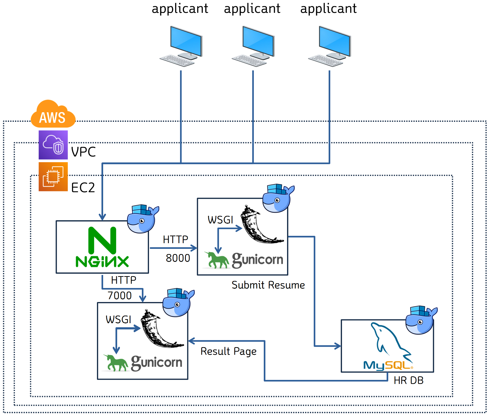

Database on Kubernetes study / Week 1
목표
- IaC를 이용한 EKS cluster 배포
- Kubectl 명령의 흐름
- CSI
- PV/PVC
- CNI
- Sercice
- ExternalDNS
- CoreDNS
- StatefulSet / HeadlessService
EKS 구성 및 아래 스택을 추가 구성합니다
1. Prometheus + Grafana
2. Logstash + OpenSearch + Cognito + Nginx Proxy
K8S 연습을 위한 최소한의 EKS cluter 구축 terraform 코드입니다.
memory leak 이슈에 일단 자동으로 대응하기 서비스를 재시작 하는 파이썬 코드를 작성했습니다.
import subprocess
import logging
import os
import argparse
import time
import socket
target_memory_percent = 80
log_file_location = {
"some_service_1": "/var/log/service_1.log",
"some_service_2": "/var/log/service_2.log"
}
log_file_keyword = {
"some_service_1": "load_success"
"some_service_2": "running"
}
restart_sleep_time = {
"some_service_2": 20
}
logger = logging.getLogger()
logger.setLevel(logging.DEBUG)
formatter = logging.Formatter('%(asctime)s %(levelname)s %(lineno)d %(message)s')
stream_handler = logging.StreamHandler()
stream_handler.setFormatter(formatter)
logger.addHandler(stream_handler)
def get_module_name() -> str:
"""
split with "-" and get first value
"""
hostname = socket.gethostname()
logger.debug("hostname:" + hostname)
module_name = hostname.split("-")[0]
logger.debug("module_name:" + module_name)
return module_name
def get_args() -> list:
"""
process를 argument형태로 입력받습니다
ex) sudo python3 restart_process.py abc efg 입력 시 abc와 efg를 순차적으로 재시작 합니다
"""
logger.debug("start_getting_parameters")
try:
parser = argparse.ArgumentParser()
parser.add_argument(
"target_process",
nargs="+",
help="<Required> input process names which has memory leak issue"
)
args = parser.parse_args()
target_process_list = args.target_process
for target_process in target_process_list:
logger.debug("process_selected_by_args:" + target_process)
return target_process_list
except Exception as e:
logger.error(e)
def check_memory_usage() -> float:
"""
memory usage가 target_memory_percent 변수값보다 큰 값인지 확인합니다
"""
logger.debug("start_checking_memory_usage")
try:
with open('/proc/meminfo', 'r') as f:
meminfo = {line.split()[0]: int(line.split()[1]) for line in f}
usage = 100 * (1 - (meminfo['MemFree:'] + meminfo['Buffers:'] + meminfo['Cached:']) / meminfo['MemTotal:'])
logger.debug("memory_usage:" + str(usage))
mem_usage = round(usage, 2)
return mem_usage
except Exception as e:
logger.error(e)
def restart_process(process_name: str, module_name: str) -> bool:
"""
target process를 입력받아 sudo service <process_name> stop && start 명령합니다
"""
logger.info("restarting:" + process_name)
try:
output = subprocess.call("sudo service " + process_name + " stop", shell=True, stdout=subprocess.PIPE, stderr=subprocess.STDOUT)
logger.debug("process_stopped:" + process_name + "|" + str(output).strip().replace("\n", ""))
if module_name in restart_sleep_time.keys(): #system hostname.split("-")[0]값이 restart_sleep_time dict에 존재하는 경우 재시작 전 대기
logger.debug("waiting_" + str(restart_sleep_time[module_name]) + "_seconds_before_restart")
time.sleep(restart_sleep_time[module_name])
output = subprocess.call("sudo service " + process_name + " start", shell=True, stdout=subprocess.PIPE, stderr=subprocess.STDOUT)
logger.debug("process_started:" + process_name + "|" + str(output).strip().replace("\n", ""))
except Exception as e:
logger.error(e)
def check_process(process_name: str) -> bool:
"""
/proc 싹 다 뒤져서 process가 잘 돌고있는지 확인합니다
"""
logger.debug("checking_process_status:" + process_name)
try:
pid_list = [int(p) for p in os.listdir('/proc') if p.isdigit()]
for pid in pid_list:
try:
with open(os.path.join('/proc', str(pid), 'cmdline'), 'rb') as f:
cmdline = f.read().decode('utf-8')
if (process_name in cmdline) & ("python" not in cmdline):
logger.info("process_is_running:" + process_name)
return True
except IOError:
continue
logger.debug("process_check_FAILED:" + process_name)
return False
except Exception as e:
logger.error(e)
def check_logfile(file_path: str, target_keyword: str, max_lines:int=100):
"""
file_path의 로그를 읽고 target_keyword가 등장하는지 max_lines만큼 지켜보다가
target_keyword가 등장하면 True를, 아니면 False를 반환한다
"""
logger.debug("start_log_verification")
line_count = 0
with open(file_path, 'r') as file:
logger.debug("log_file_opening_success")
# 파일의 끝으로 이동
file.seek(0, os.SEEK_END)
while line_count < max_lines:
# 새로운 라인을 읽음
line = file.readline()
# 새로운 라인이 없으면 잠시 대기한 뒤 다시 시도
if not line:
time.sleep(0.1)
logger.debug("no_new_line")
else:
logger.debug("reading:" + line.strip())
if target_keyword in line:
logger.debug("match_line_detected:" + line.strip())
return True
line_count += 1
logger.error("log_verification_fail")
return False
def main():
target_process_list = get_args()
module_name = get_module_name()
memory_usage = check_memory_usage()
if memory_usage >= float(target_memory_percent):
for target_process in target_process_list:
if check_process(target_process): #check process exist before restart process
restart_process(target_process, module_name)
time.sleep(3) #process 재시작 후 3초간 대기
check_process(target_process)
if target_process in log_file_location.keys():
# time.sleep(10)
if check_logfile(log_file_location[target_process], log_file_keyword[target_process]):
#logfile검증이 필요한 경우
logger.info("process_restart_succeed:" + target_process)
else:
#logfile을 검증할 필요가 없는 경우
logger.info("process_restart_succeed:" + target_process)
if __name__ == "__main__":
main()
재난문자 발생 시점마다 트래픽이 튀어서 광범위로 발송되는 재난문자 발생 시점 파악이 필요했습니다.
때문에 재난문자 발생 시 Slack으로 알람을 쏴주도록 구성해보았습니다
아래 사이트에서 재난문자 발생 내역을 확인할 수 있습니다
https://www.safekorea.go.kr/idsiSFK/neo/sfk/cs/sfc/dis/disasterMsgList.jsp?menuSeq=679
아래 공공데이터 포털에서 재난문자 API 사용신청 후 인증키를 수령합니다
https://www.data.go.kr/iim/api/selectAPIAcountView.do
API를 호출하고 Slack으로 메세지를 발송해주는 코드를 작성합니다
AWS Lambda를 매 10분 마다 실행합니다


함수를 자주 실행하면 API throttling에 걸리기 때문에 Lambda 설정에서 코드 재실행을 2회까지 허용합니다


CloudWatch를 이용해 확인해보니 requests 라이브러리가 없다고 합니다

Local에 python3.9용 requests library를 다운로드하고 압축합니다
mkdir temp_for_download_module && cd temp_for_download_module
pip install \
--platform manylinux2014_x86_64 \
--target=emergency_alert_to_slack \
--implementation cp \
--python 3.9 \
--only-binary=:all: --upgrade \
requests

작성했던 코드로 lambda_function.py로 저장해줍니다

AWS Lambda -> Code 탭 > Upload from > .zip file 클릭 후 방금 생성한 압축파일을 업로드 해줍니다


잘 동작하는 구조는 다음과 같습니다

Test 탭에서 'Test'버튼을 클릭했을 때 에러가 발생하지 않으면 다음과 같이 초록색 화면이 표시됩니다(에러나면 빨간색) 
Slack에 다음과 같이 메세지가 잘 전송됩니다

alternatives (심볼링 링크 자동화)
poetry (가상환경)
파이썬 내부의 venv를 사용해 가상환경을 생성하고 pip를 이용해 pypi에서 패키지를 가져옵니다.
conda (가상환경)
anaconda 자체 가상화 환경을 사용하고, conda 자체 저장소(anaconda cloud)를 사용해 패키지를 가져옵니다. (conda config --add channels
Notice
파이썬 코드 작성 후 타인과 공유하다보니 클린코드의 필요성을 느껴 공부한것을 기억할 겸 정리했습니다
Warning
아직 책을 읽으며 정리하는 중 입니다
_single_leading_underscore: weak “internal use” indicator. E.g. from M import * does not import objects whose names start with an underscoresingle_trailing_underscore_: used by convention to avoid conflicts with Python keyword, e.g.
__double_leading_underscore: when naming a class attribute, invokes name mangling (inside class FooBar, __boo becomes _FooBar__boo; see below).__double_leading_and_trailing_underscore__: “magic” objects or attributes that live in user-controlled namespaces. E.g. __init__, __import__ or __file__. Never invent such names; only use them as documented.Tip
💡 유형 : 개인 토이 프로젝트
Service Flow

DEV Flow

AWS 인프라 구성도